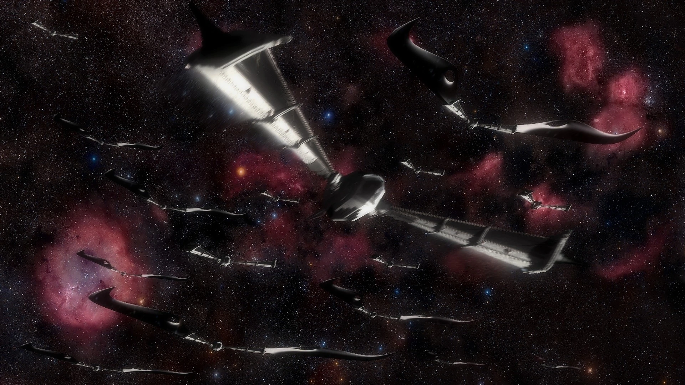

The Xeelee Universe is peak drama and makes me as a human feel dwarved, the entire timeline spans 5 000 000 years and is a spectacular tale of the universe where wars are fought for survival. In the books, humans go from being thrown about and enslaved by alien races to the second most advanced race just below the God like Xeelee which have existed since the beginning of time
The Xeelee Universe is peak drama and makes me as a human feel dwarved, the entire timeline spans 5 000 000 years and is a spectacular tale of the universe where wars are fought for survival. In the books, humans go from being thrown about and enslaved by alien races to the second most advanced race just below the God like Xeelee which have existed since the beginning of time
My favourite book out of the series is Vaccum Diagrams, being the only book that does not really have
a main character, it is an overview of the entire timeline with short stories dating from the Holy Roman Empire
to the End of the war at 5,000,000. The book also shows the greater "Evil" of the series, Photino Birds. Humans
Fought the Xeelee for over thousands of years but to the Xeelee, they were barely a blip on the radar as they were
fighting a billion year war against the Birds who, are made up of Dark matter where as we, the Xeelee and the Humans
were made up of Baryonic matter